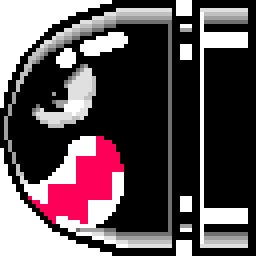
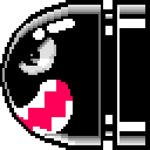
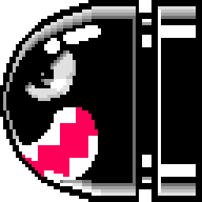

Gamer é o nome dado atualmente para os famosos “jogadores de videogame”. Esses podem ser tanto gamers profissionais como gamers das horas vagas. Com a onda crescente de games e consoles por todo o mundo e com o grande avanço tecnológico no mundo dos games, o numero de gamers tem crescido ao redor do mundo o que tem tornado o mercado dos games muito atrativo.Hoje em dia existem até mesmo games gratuitos onde a empresa criadora do jogo lucra através de anúncios ou até mesmo na venda de itens para o jogo. O mundo dos games tem feito milhares de dólares anualmente, muito pelo fato de que os gamers não se fecham somente nos jogos mas eles também criam verdadeiras comunidades virtuais onde frequentemente marcam encontros em salas online e também se encontram pessoalmente para jogar em lojas especializadas como lan houses e etc. Muitas vezes para um gamer o fato de possuir os melhores itens e um nível de jogo alto, indica que o jogador possui um status dentro da comunidade de gamers aonde ele joga, isso faz com que as empresas explorem ao máximo a interatividade e atratividade dos jogos criando assim um verdadeiro mundo virtual para os gamers. Já para os gamers profissionais passar a maior parte do tempo jogando games para eles é profissão. Eles podem ser apostadores ou pessoas contratadas por empresas para testarem os novos jogos antes que eles sejam lançados no mercado.
Mario Bros Apresenta dois irmãos encanadores, Mario e Luigi, tendo que investigar o aparecimento de estranhas criaturas nos encanamentos de Nova York, com o objetivo derrotar todos os inimigos de cada fase. A mecânica dos personagens envolve apenas correr e pular. Diferentemente de outros jogos da franquia, os jogadores não podem eliminar os inimigos pulando em cima deles. Cada fase consiste em um conjunto de plataformas com canos em cada canto da tela, e, além disso, há um objeto chamado "POW" no centro, que, quando ativado, afeta todos os inimigos.[8] As fases contêm somente uma tela fixa, ou seja, os inimigos e o jogador, caso passem pelo limite de um lado, reaparecem do outro. O jogador ganha pontos por derrotar vários inimigos em sequência, e pode participar numa rodada-bônus para obter uma pontuação ainda maior. Inimigos são derrotados chutando-os depois que eles são golpeados por baixo e ficam de costas para o chão temporariamente. Se o jogador não eliminar o inimigo enquanto ele se encontra vulnerável, este volta a ficar ativo, mudando de cor e ganhando velocidade. Cada fase tem um certo número de inimigos, com um inimigo final que imediatamente muda de cor e aumenta de velocidade. Acertar um inimigo virado por baixo novamente o faz recuperar a atividade, mas não o faz ficar mais rápido, e nem mudar de cor.
